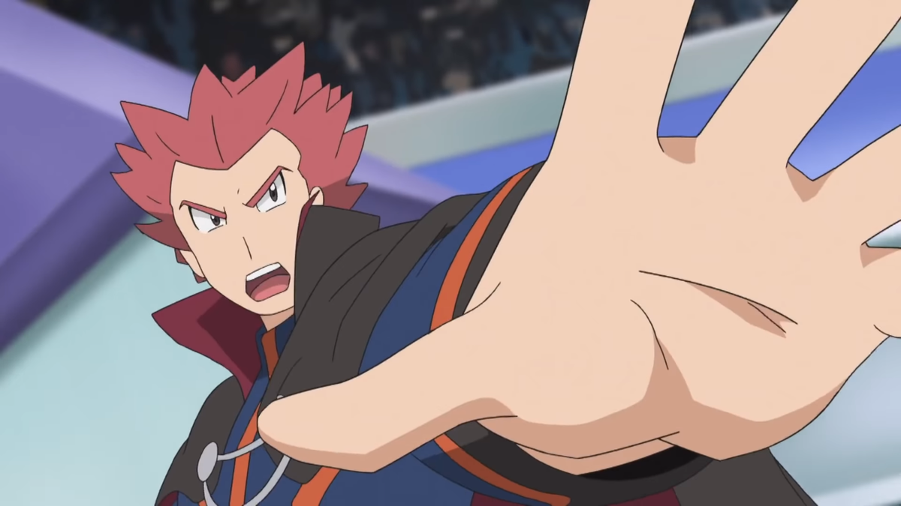
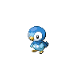

El Comienzo
Cuenta la leyenda que al principio de los tiempos un huevo habitaba en la nada y de él nació Arceus, el Pokémon Alfa, que con sus 1000 brazos dio forma al universo. El Pokémon 493 creó a partir de entonces a otros Pokémon para ayudarle a construir este universo.
El segundo en nacer fue Mew, por lo que él y Arceus estuvieron presentes durante todo el proceso de formación del cosmos. Mew es el ancestro de todos los Pokémon existentes en el Mundo Pokémon ya que su ADN contiene el código genético de todos ellos lo que le hace ser capaz de usar cualquier técnica.
Tras él nació Dialga, que dio origen al tiempo, el tiempo empezó a correr a su nacimiento y desde entonces avanza a cada latido de su corazón. Dialga puede controlar el tiempo a su antojo, así como viajar a través de él. Junto a él nació Palkia, que dio origen al espacio, a cada respiración suya el espacio se vuelve más estable. Más tarde nacería Giratina que fue desterrado por su violencia a un mundo en el que ni el tiempo ni el espacio existen, el Mundo Distorsión. A través de este mundo en el que las leyes de la física no se cumplen observa el Mundo Pokémon en silencio. Ejerce de medidor de Dialga y Palkia si es oportuno.
Mejores Entrenadores
Rojo (Red en inglés, レッド Red o サトシ Satoshi antes de la segunda generación en japonés), es el protagonista de las ediciones Pokémon Rojo, Verde, Azul, Amarillo, Rojo Fuego y Verde Hoja de los videojuegos de Pokémon correspondientes a la primera y tercera generación.
Como primer protagonista de la saga, es un personaje recurrente en la misma, apareciendo en Pokémon Oro, Plata, Cristal/Oro HeartGold y Plata SoulSilver como el último entrenador a vencer, en Pokémon Negro 2 y Pokémon Blanco 2 como un participante del Pokémon World Tournament y en Pokémon Sol y Pokémon Luna y Pokémon Ultrasol y Pokémon Ultraluna como un legendario campeón de Kanto que te retará a un combate definitivo junto a su rival Azul, cerca del Árbol de Combate. En estos juegos, es además el líder del Árbol de Combate, por lo que tras derrotarle a él o a Azul, podrás volver a combatir en el interior del árbol, donde ofrecerá un combate diferente.
En Pokémon: Let's Go, Pikachu! y Pokémon: Let's Go, Eevee!, su papel original es cubierto por Chase, mientras que Rojo aparece en la pospartida como entrenador a combatir.
Este contenido proviene de wikidex.net, y debe darse atribución a sus autores, tal como especifica la licencia.
Se prohíbe su uso a PlagioDex (el wiki de FANDOOM), por copiar reiteradamente sin dar atribución
N Armonia1 (N Harmonia en inglés, ナチュラル・ハルモニア・グロピウス Natural Harmonia Gropius2 en japonés) es uno de los antagonistas de los juegos Pokémon Negro y Pokémon Blanco. En Pokémon Negro y Blanco es el líder del Equipo Plasma (se le ve coronado por Ghechis al inicio del juego), y en Pokémon Negro 2 y Blanco 2 se convierte en el líder del Ex-Equipo Plasma, hecho con otros miembros que dejaron la banda, para luchar contra los planes de Ghechis y el nuevo Equipo Plasma.
Su figura está rodeada de misterio. Su nombre verdadero en español es desconocido en los videojuegos, donde en ningún momento se revela, llamándose sólo por el nombre clave de "N". En Pokémon Negro y Pokémon Blanco, cuando le derrotas por última vez en el Palacio de N, Ghechis le dice ¿Y tú te llamas Armonia como yo? por lo que el primer apellido es lo único que se revela de su nombre en los videojuegos. En Pokémon Negro y Blanco, al interactuar con la pelota de baloncesto de la estancia de N, se puede ver grabado en el objeto el nombre de "Armonia"; en Pokémon Negro 2 y Blanco 2, el nombre grabado cambió al de "Armonía", como resultado de un error de escritura de los videojuegos. En una entrevista en japonés, Junichi Masuda desveló que el verdadero nombre de N en ese idioma es Natural Harmonia Gropius.

Lance (Lance en inglés; ワタル Wataru en japonés) es un maestro Pokémon de tipo dragón. Fue el cuarto y último miembro del Alto Mando de Kanto, y tres años después se convirtió en el campeón de la Liga Pokémon de Johto.
Lance es un entrenador experto en Pokémon tipo dragón, aunque también usa algunos de otros tipos que se les asemejan en aspecto y poderes, como Aerodactyl, Charizard o Gyarados que curiosamente todos comparten junto a Dragonite el tipo volador en la primera generación (caso similar a Agatha con su equipo Pokémon). Procede de Ciudad Endrino, en Johto, y pertenece a una familia famosa por su relación con los Pokémon de tipo dragón. Su prima, Débora, es la líder del gimnasio de dicha ciudad, y su abuelo el guardián del santuario dedicado a los Pokémon de tipo dragón, ubicado en la Guarida Dragón.
En la generación original de la franquicia Pokémon, Azul fue uno de los jóvenes entrenadores con más talento de toda la región de Kanto. En los títulos de videojuegos, el anime de Pokémon Orígenes, así como en el manga Pokémon Aventuras, Azul siempre se las arregló para ir un paso por delante de su compañero, Red.
Rojo y Azul se convirtieron en rápidos rivales cuando ambos recibieron sus Pokémon de inicio exactamente al mismo tiempo del respetado profesor Samuel Oak. Después de este punto, los dos jóvenes entrenadores encontraron que sus caminos se cruzaban repetidamente. Azul consiguió convertirse en Campeón de la Liga Pokémon a una edad temprana, pero este logro duró poco ya que fue rápidamente derrotado por su Rojo antes de que Oak pudiera viajar para felicitar a su propio nieto.
En la franquicia de videojuegos, Cynthia aparece numerosas veces en varios títulos como una especie de guía. Dicho esto, también es una entrenadora de Pokémon bastante intimidante. Su Pokémon característico es Lucario o Garchomp, que no solo son algunas de las mascotas más populares de la franquicia en los últimos años, sino también algunos de los personajes más poderosos de la serie. Y cuando estos personajes obtienen la ventaja de una mega evolución en títulos posteriores, se vuelven aún más poderosos...
En el episodio de anime, Memories are Made of Bliss!, Ash y compañía ven su respectiva batalla con el entrenador de toda la vida Flint. Mientras Flint hace una gran actuación, al final, Cynthia está a la altura de su título de campeona de la liga. Cynthia no solo es uno de los personajes mejor diseñados de toda la franquicia, sino que también es la primera mujer campeona de la Liga que los jugadores se encontrarán en sus respectivos viajes.
Pokemones Más Poderosos
Arceus es un Pokémon singular de tipo normal introducido en la cuarta generación. De acuerdo con las mitologías de las regiones del mundo Pokémon y lo conocido hasta el momento se cree que es el primer Pokémon existente y creador del mundo Pokémon.
Aunque no se sabe que evolucione hacia o desde ningún otro Pokémon, Arceus cambiará de tipo cuando sostenga una Placa o un Cristal Z específico del tipo.
Al igual que Darkrai y Shaymin antes, Arceus no fue reconocido oficialmente por Nintendo hasta el 14 de febrero de 2009, año de su primera película. Se reveló oficialmente al público internacional el 3 de agosto de 2009.
Arceus es conocido como "El Original", ya que se dice que creó a Sinnoh y Ransei, y posiblemente a todo el universo Pokémon, junto con los guardianes del lago y el trío de la creación.
Es el maestro del trío de los guardianes del lago y del trío de la creación.

Dialga y Palkia son los Señores del Tiempo y el Espacio. Fueron los primogénitos de Arceus, junto con el número tres, Giratina.
Dialga es un Pokémon legendario de doble tipo Acero/Dragón introducido en la IV Generación.
No se sabe que evolucione hacia o desde ningún otro Pokémon.
Dialga es la mascota del juego de Pokémon Diamante, que aparece en el boxart.
Junto con Palkia y Giratina, es miembro del trío de creación de Sinnoh, representando el tiempo.
Palkia (Japonés: パルキア Palkia) es un Pokémon legendario de tipo dual Agua/Dragón introducido en la IV Generación.
No se sabe que evolucione hacia o desde ningún otro Pokémon.
Palkia es la mascota del juego Pokémon Pearl, que aparece en el boxart.
Junto con Dialga y Giratina, es miembro del trío de creación de Sinnoh, representando el espacio.
Giratina (Japonés: ギラティナ Giratina) es un Pokémon legendario de tipo dual Fantasma/Dragón introducido en la IV Generación.
Aunque no se sabe que evolucione hacia o desde ningún otro Pokémon, Giratina tiene una segunda forma activada al darle a Giratina un Orbe Gris para sostener, o mientras está en su hogar, el Mundo de la Distorsión. Su forma original, la Forma Alterada, se convertirá entonces en la Forma de Origen.
La Forma de Origen de Giratina fue revelada oficialmente a principios de febrero de 2008.
Giratina es la mascota del juego Pokémon Platino, que aparece en el boxart en su Forma de Origen.
Junto con Dialga y Palkia, es miembro del trío de creación de Sinnoh, representando a la antimateria.
Rayquaza (Japonés: レックウザ Rayquaza) es un Pokémon legendario de tipo dual Dragón/Vuelo presentado en la Tercera Generación.
Aunque no se sabe que evolucione hacia o desde ningún otro Pokémon, Rayquaza puede Mega Evolucionar hacia Mega Rayquaza si conoce el Ascenso del Dragón, pero sólo si no tiene un Cristal Z. En Pokémon Omega Rubí y Zafiro Alfa, el Rayquaza que aparece en el Episodio Delta debe ser capturado (lo que requiere que se coma al Meteorito) antes de que el jugador pueda Mega Evolucionar en cualquier Rayquaza.
Rayquaza es la mascota del juego de Pokémon Esmeralda, que aparece en el boxart del juego. Sirve para poner fin al conflicto entre Kyogre y Groudon cuando el líder del Equipo Magma, Maxie, y el líder del Equipo Aqua, Archie, los despertaron.
Junto con Kyogre y Groudon, Rayquaza es parte del trío del clima, sirviendo como su maestro de trío. En Omega Ruby y Alpha Sapphire, juega un papel importante durante el Episodio Delta y se requiere que lo atrapen allí para luchar contra Deoxys.

Kyogre, el Señor del Agua, creó el mar, mientras que Groudon, el Señor de la Tierra, creó la tierra.
Kyogre (Japonés: カイオーガ Kyogre) es un Pokémon legendario de tipo agua que se introdujo en la Tercera Generación.
Aunque no se sabe que evolucione hacia o desde ningún otro Pokémon, el Kyogre puede someterse a la Reversión Primaria y convertirse en el Kyogre Primigenio si tiene el Orbe Azul.
Kyogre posee la capacidad de expandir los océanos. En la antigüedad, entró en conflicto con Groudon, un Pokémon con la capacidad de expandir los continentes. En los Pokémon Zafiro, Esmeralda y Zafiro Alfa, Kyogre es buscado por el Equipo Aqua como parte de su plan para crear más hábitats para los Pokémon acuáticos elevando el nivel del mar.
Groudon (Japonés: グラードン Groudon) es un Pokémon legendario de tipo terrestre introducido en la Tercera Generación.
Aunque no se sabe que evolucione hacia o desde ningún otro Pokémon, Groudon puede someterse a la Reversión Primaria y convertirse en Groudon Primigenio si mantiene el Orbe Rojo y así se convierte en el tipo dual Fuego/Tierra.
Groudon posee la capacidad de expandir los continentes. En la antigüedad entró en conflicto con Kyogre, un Pokémon con la capacidad de expandir los océanos. En los Pokémon Rubí, Esmeralda y Omega Rubí, Groudon es buscado por el Equipo Magma como parte importante de su plan para crear más hábitats para los Pokémon terrestres bajando el nivel del mar.
Groudon es la mascota de Pokémon Rubí y su remake Pokémon Omega Rubí, con Groudon apareciendo en la caja de arte de Rubí y Primal Groudon apareciendo en la caja de arte de Omega Rubí.
Junto con Kyogre y Rayquaza, Groudon es parte del trío del clima.
Pokemones Favoritos
Once upon a time
On a wild town called Maturin
There was this girl in love with a dick
And they were talking about pokemon
And which Pokemon did they look alike
She said he seemed like Jolteon
He said she was very similar to Togepi
When she asked why he said "cuz it's very very cute, but when it's mad it's strong af"
Even after they broke up, she still thought that wasn't that bad

Cubone
I fell in love with him after watching Pokemon Origins
I like Cubone porque es bien pegado al entrenador

Oshawott (Japonés: ミジュマル Mijumaru) es un Pokémon de tipo Agua introducido en la Generación V.
Evoluciona a Dewott a partir del nivel 17, que evoluciona a Samurott a partir del nivel 36.
Junto con Snivy y Tepig, Oshawott es uno de los tres Pokémon de Unova disponibles al principio de Pokémon Negro, Blanco, Negro 2 y Blanco 2.

Piplup (Japonés: ポッチャマ Pochama) es un Pokémon de tipo Agua introducido en la IV Generación.
Evoluciona a Prinplup a partir del nivel 16, que evoluciona a Empoleon a partir del nivel 36.
Junto con Turtwig y Chimchar, Piplup es uno de los tres Pokémon de Sinnoh disponibles al principio de Pokémon Diamante, Perla y Platino.
